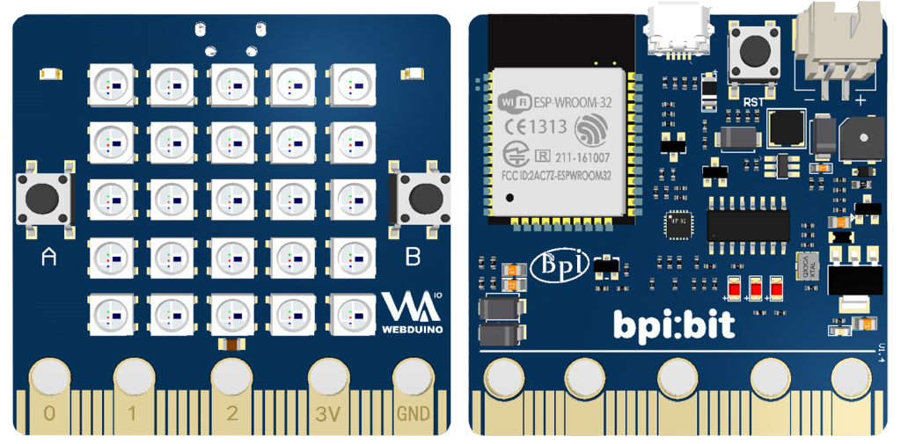
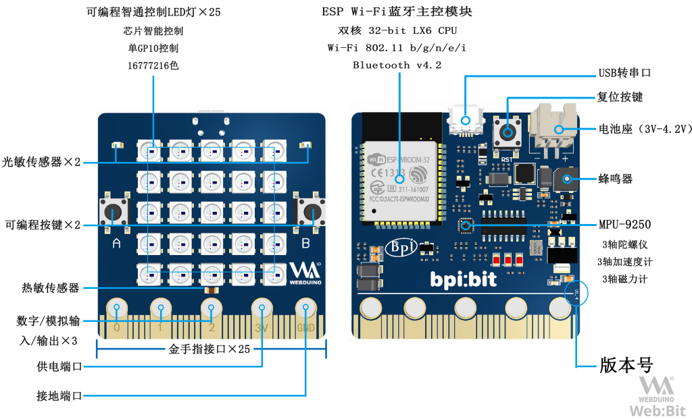
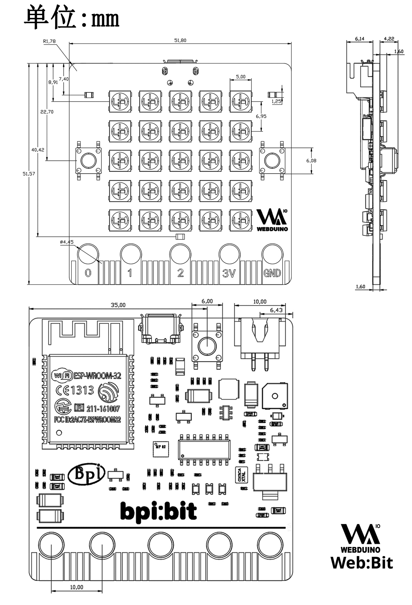
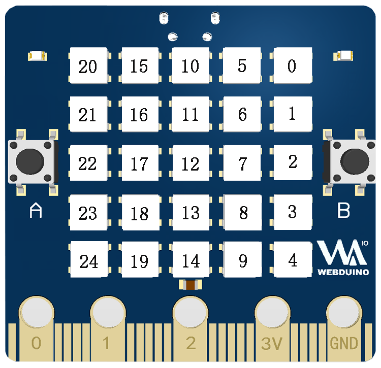
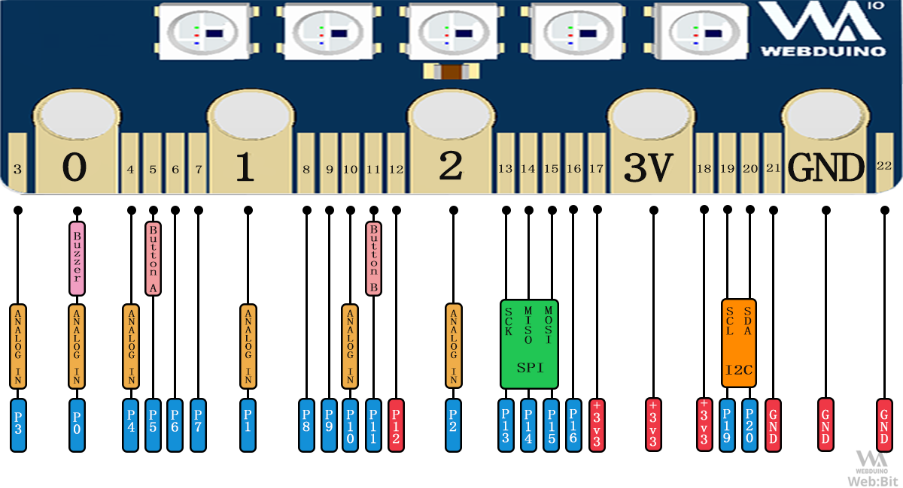
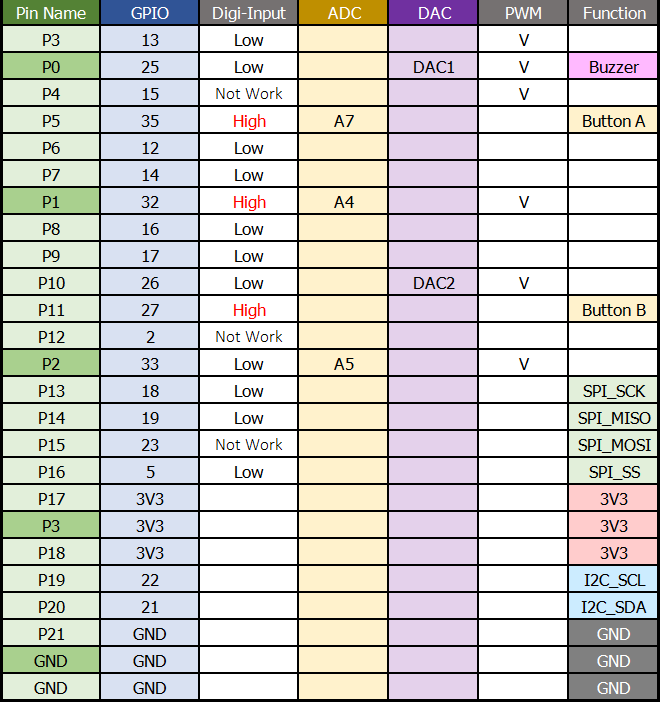
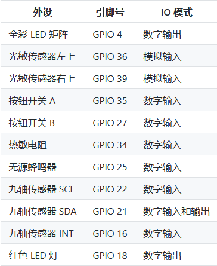

开发板介绍
2022-12-02
以下内容介绍硬件 1.4 版，编辑日期 2019年7月24日。
Bpi:Bit 又名 Web:Bit ，是 Webduino 的专用开发板，采用 ESP-WROOM-32 （ESP32）模组作为核心，拥有 Wi-Fi & Bluetooth 无线功能，支持多设备协同控制，更是内置了许多的传感器，用户可以轻松体验到开发的无穷乐趣。
正面与背面

Web:Bit 外观长约 5 公分，宽约 5 公分，重量约 10 ~ 12 公克，带 25 颗 LED 灯为正面（图左侧），反之为是背面（图右侧）。

尺寸规格图

矩阵 LED 定义
Web:Bit 按照 5 * 5 排列方式焊接了 25 颗(编号 0 ~ 24 ) 1600 万色矩阵 LED (WS2812) ，所有的 LED 的控制仅使用一个引脚 (GPIO 4) 即可控制。

底部金手指定义
在 Web:Bit 的底部具有一排 25 Pin 的「金手指」接口，其定义如下。
注意：背面的金手指未连接硬件，所以无法使用


内置传感器定义
Web:Bit 搭载了 25 颗矩阵 LED ，两个光敏传感器、两个按钮开关、一个热敏电阻、一个无源蜂鸣器和一个九轴传感器（分别为三轴加速度、三轴陀螺仪与三轴磁力计）对应引脚如下：
